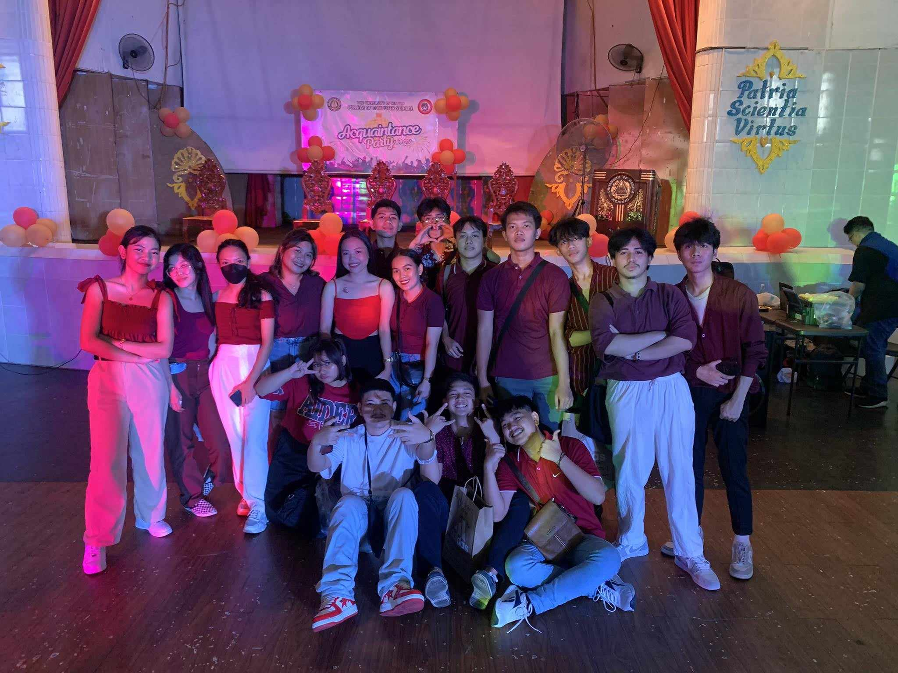
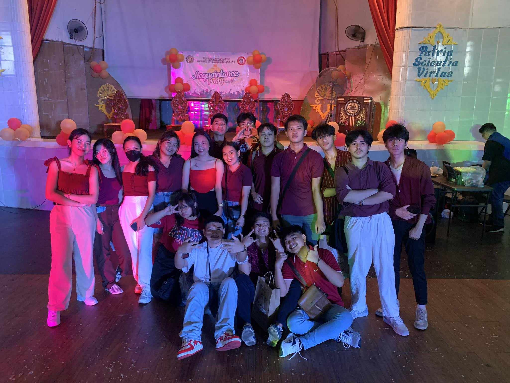

COMPUTER SCIENCE HISTORY
Welcome to the College of Computer Science and Information Technology of The University of Manila. We’re committed to advancing the state of the art in Computer Science and Information Technology, and to providing a challenging and exciting education for our students. Faculty members maintain active programs of research and publication in computer vision, programming languages, machine learning, databases, modeling and simulation, and the theory of computation. We offer academic programs leading to the degree of Bachelor of Science in Computer Science, and Associate in Computer Technology. Our students have the opportunity to carry out independent study and to collaborate with faculty on research projects. General Objectives:
The University of Manila College of Computer Science / Information Technology aims to produce technological and scientifically empowered professionals, informational technology / computer science experts whose breadth and depth of orientation, knowledge and training, are within global standards, who shall be committed to share their expertise with the various sectors of the academic community and the community at large, ever motivated to share their concepts, their technological skills, their persons to everyone embedded in the UM trilogy of ideals: Love of Country (Patria), Love of Science (Scientia), and Love of Virtue (Virtus).
Specific Objectives: To equip students with the skills and competencies in information communications technology, its operation, language and design. To empower would-be information technology / computer science professionals with the latest trends, techniques and developments in the information communications technology to enable them to respond to the needs of society. To provide adequate instruction, training, supplemental lectures, seminar workshops, to give office workers and practitioners within the service areas of UM proper orientation on the use of information technology in their various organizational operations. To prepare would-be information technology / computer science graduates with a solid foundation on the various languages, programs and systems to enable them to perform with confidence the varied tasks that may be expected of them the global organizations of the corporate world.
DR. RICHARD D. DE LEON Dean, College of Computer Science & Engineering PROF. STANLEY P. VERDE Assistant Dean, College of Computer Science & Information Technology. Under the vigilant stewardship of Dr. Virgilio de los Santos, the University has been placed to a higher level of credit and standard. In line with the thrusts of the government and to keep abreast with the demands of the modern times, on February 16, 1994, the University offered four-year courses in Computer Science. To show further that the University of Manila has come of age and in response to the call of the 90’s, on February 21, 1994, it offered new courses in the following programs: Doctor of Education, Doctor of Public Administration, and Master of Business Administration.
These programs are designed to provide administrators, businessmen, analysts, researchers, and educators with the theoretical background, values, competencies, and skills for them to be able to participate and contribute to the growth and development of a better and a more humane society.


 
